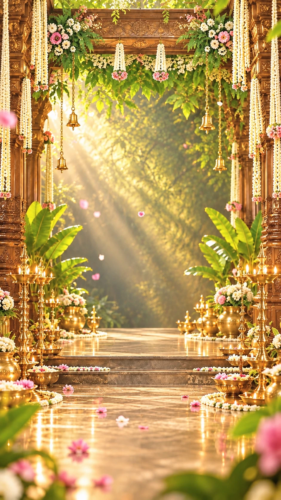

Nitchayathartham · நிச்சயதார்த்தம்
Sasidharan & Abinaya
are getting engaged
Sunday · 15 November 2026
With great joy
Our two families
With the blessings of our elders, we invite you to share in a day our families have waited for.
Dr. Sasidharan S
Son of
Shri D. Sakthikumar
&
Smt. S. Parimala
Dr. Abinaya M
Daughter of
Shri K. N. Murugesan
&
Smt. M. Anitha Devi
Nitchayathartham · நிச்சயதார்த்தம்
The engagement ceremony
Amman Sakthi Mahal
Sunday, 15 November 2026
6:00 PM – 7:30 PM
No. 61c, Thiyagaraja Agraharam,
Suntharvilagam Main Road,
Thiruvarur – 610001
—Days
—Hours
—Minutes
—Seconds
Your blessings
Come, and bless them
Your gracious presence and heartfelt blessings are the only gifts we ask for. There is no list at the door.
With your blessings, a new chapter begins
Sasi & Abi
Two families, one happy beginning.
#SasiWedsAbi
15 · 11 · 2026 · Thiruvarur